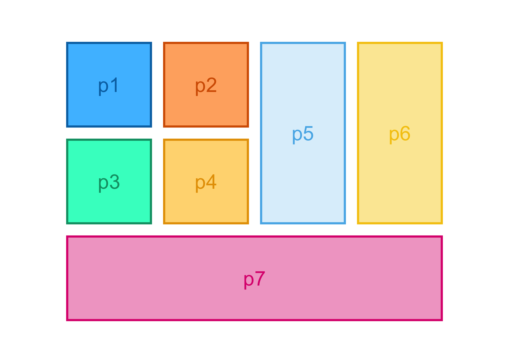
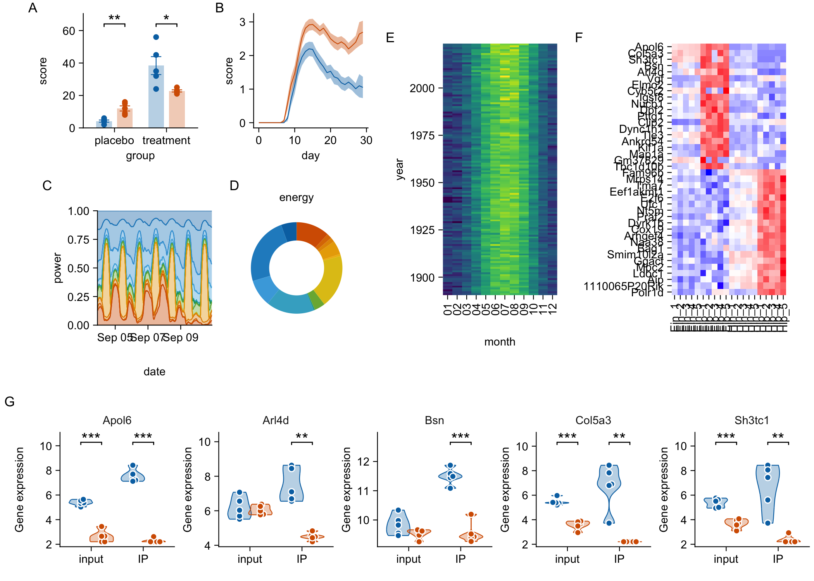
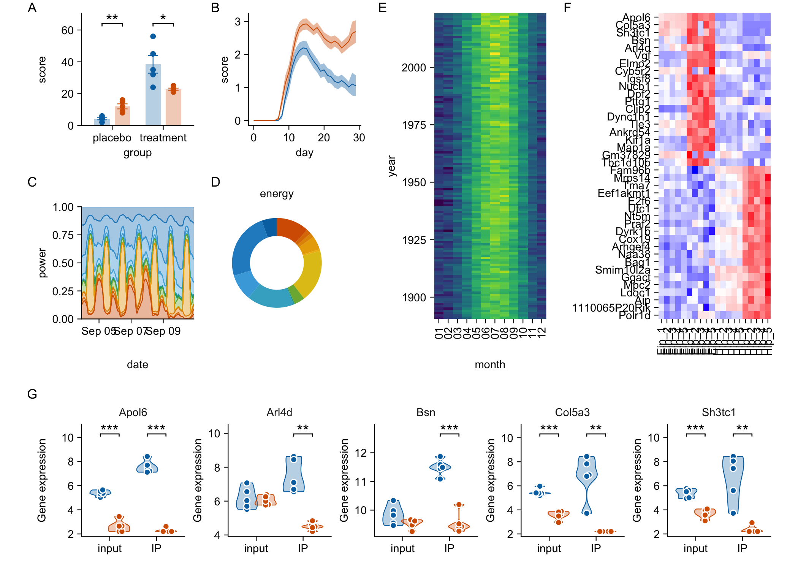
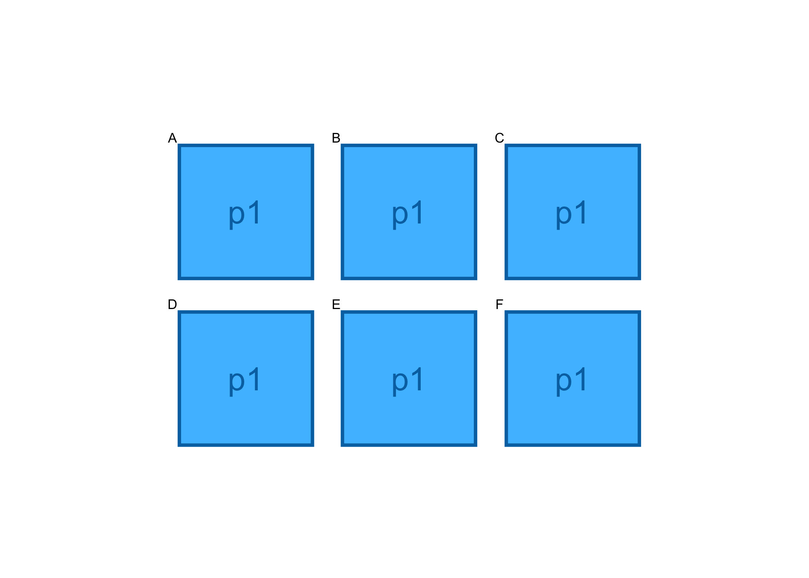
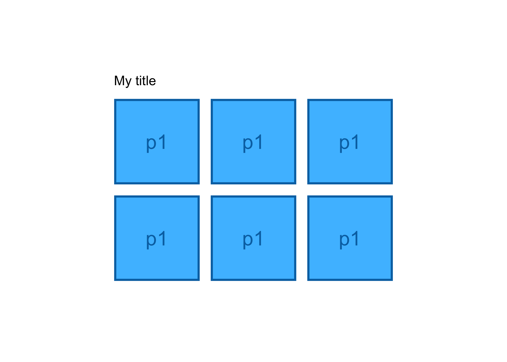

The goal of tidylayouts is to streamline the creation of multi-plot layouts for scientific papers. It allows to gradually expand and adjust layouts using a consistent and intuitive syntax.
tidylayouts is built around the pipe and aims to provide seamless support for plots with absolute dimensions, such as those created with tidyplots.
⚠️ Warning ⚠️
This package is not yet functional. It is not intended for production use at this stage. If you would like to stay informed, feel free to follow me on social media (@jbengler).
Usage

Now lets try with some real absolutely sized plots.
tidyplots_options(
width = 25,
height = 25,
my_style = function(x) { x |> remove_legend()}
)
p1 <- study |>
tidyplot(x = group, y = score, color = dose) |>
add_mean_bar(alpha = 0.3) |>
add_sem_errorbar() |>
add_data_points() |>
add_test_asterisks(hide_info = TRUE)
p2 <- time_course |>
tidyplot(x = day, y = score, color = treatment, dodge_width = 0) |>
add_mean_line() |>
add_sem_ribbon()
p3 <- energy_week |>
tidyplot(x = date, y = power, color = energy_source) |>
add_areastack_relative()
p4 <- energy |>
tidyplot(y = energy, color = energy_source) |>
add_donut()
p5 <- climate |>
tidyplot(x = month, y = year, color = max_temperature) |>
add_heatmap() |>
adjust_size(height = 55)
p6 <- gene_expression |>
tidyplot(x = sample, y = external_gene_name, color = expression) |>
add_heatmap(scale = "row") |>
sort_y_axis_labels(direction, -padj) |>
adjust_legend_title("Row Z-score") |>
adjust_size(height = 55) |>
remove_x_axis_title() |>
remove_y_axis_title() |>
remove_legend()
p7 <- gene_expression |>
head(100) |>
tidyplot(x = sample_type, y = expression, color = condition) |>
add_violin() |>
add_data_points_beeswarm(white_border = TRUE) |>
adjust_x_axis_title("") |>
remove_legend() |>
add_test_asterisks(hide_info = TRUE, bracket.nudge.y = 0.3) |>
adjust_y_axis_title("Gene expression") |>
split_plot(by = external_gene_name, nrow = 1)
tidyplots_options()
Of note, there are several alignment issues 🙃
-
E/Fneither align with the upper edge ofA/Bnor with the lower edge ofC/D -
Cdoes not align with the left edge ofA -
Gdoes not align with the left edge ofA/C - The tags of
A/BandC/Dare not on the same height
Can we have a global alignment that is based on the plot panels? This would allow for plots to be aligned top left or bottom left.
More extensively, one could offer:
- Horizontal alignment:
left,right,center,justified - Vertical alignment:
top,bottom,center,justified
Can this maybe achieved with spacers?
-
left:(A, B, C, NULL) -
right:(NULL, A, B, C) -
center:(NULL, A, B, C, NULL) -
justified:(A, NULL, B, NULL, C)
In the meantime, we can fix the layout by “freeing” plots that span multiple rows or columns, and adding a spacer to push C/D to the left.
row(p1, p2) |>
add_below(row(p3, p4, NULL)) |>
add_right(p5 |> adjust_size(height = NA),
p6 |> adjust_size(height = NA)) |>
add_below(p7 |> adjust_size(width = NA)) |>
layout_tags("A")
More examples


Layout adjustments
# tags
grid(p1, p1, p1, p1, p1, p1) |> layout_tags("A")
# title
grid(p1, p1, p1, p1, p1, p1) |> layout_title("My title")